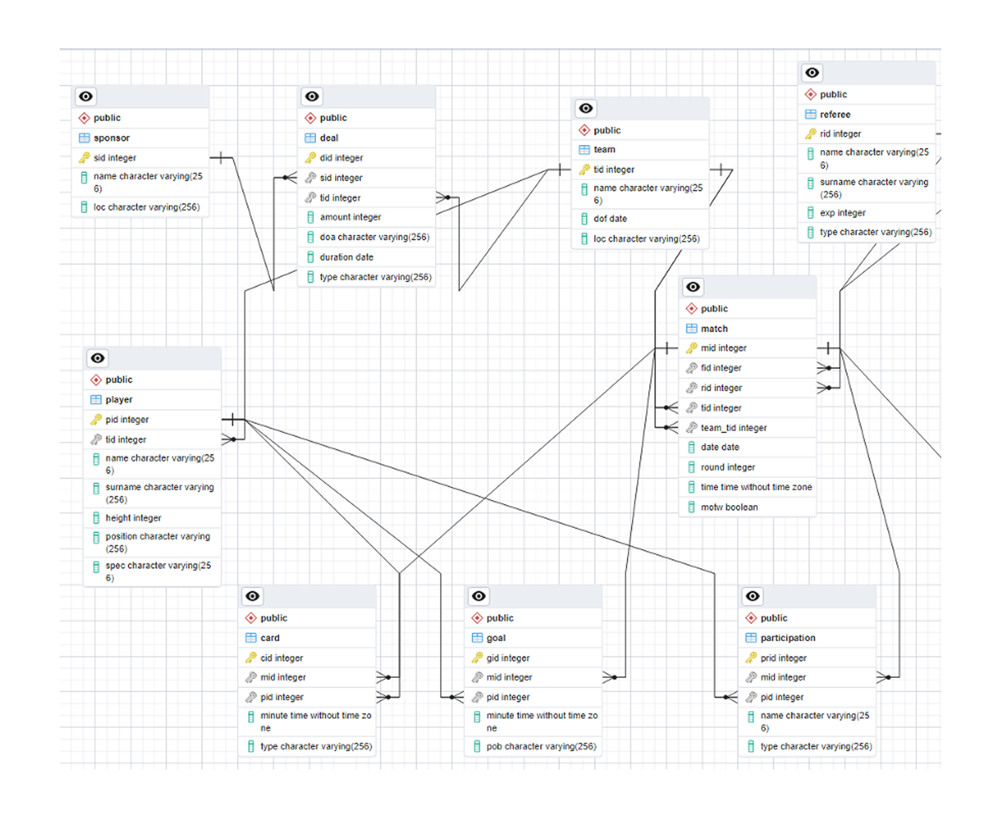

1. Conceptual & Logical Design
The database manages a football season including players, teams, matches, goals, and cards.
The primary goal was to achieve 3rd Normal Form (3NF) to minimize redundancy and ensure data consistency.
- Handling Circular Dependencies: A naive design (Match -> Team -> Player) creates a loop where data can become inconsistent. I resolved this by enforcing strict integrity rules in the Participation association entity.
- Entity Modeling: Designed 14 normalized tables. Special attention was paid to the Deals table to track sponsorship contracts with validity periods.

2. Physical Implementation (DDL)
Implemented in PostgreSQL. I went beyond simple table creation by using CHECK constraints and Indexes to ensure data quality and performance.
CREATE TABLE match (
mid SERIAL NOT NULL PRIMARY KEY,
fid INTEGER NOT NULL REFERENCES field(fid),
rid INTEGER NOT NULL REFERENCES referee(rid),
home_team_id INTEGER NOT NULL REFERENCES team(tid),
away_team_id INTEGER NOT NULL REFERENCES team(tid),
date DATE NOT NULL,
home_score INTEGER DEFAULT 0 CHECK (home_score >= 0),
away_score INTEGER DEFAULT 0 CHECK (away_score >= 0),
CONSTRAINT check_teams CHECK (home_team_id != away_team_id)
);
CREATE INDEX idx_match_date ON match(date);
3. Advanced Querying
The core value lies in data extraction. I utilized complex SQL features like Set Operations (INTERSECT), Subqueries, and Having clauses to answer specific business questions.
SELECT t.tid, t.name AS team_name FROM team t
WHERE t.tid IN (SELECT DISTINCT tid FROM deal)
INTERSECT
SELECT t.tid, t.name AS team_name FROM team t
JOIN (
SELECT tid FROM participation p
JOIN player pl USING(pid)
GROUP BY tid HAVING COUNT(DISTINCT p.mid) >= 5
) AS experienced_teams ON t.tid = experienced_teams.tid;
SELECT p.name, p.surname, t.name, COUNT(DISTINCT part.mid) AS match_count
FROM player p
JOIN participation part USING(pid)
JOIN team t USING(tid)
GROUP BY p.pid, t.tid, p.name, p.surname, t.name
HAVING COUNT(DISTINCT part.mid) >= 3
ORDER BY match_count DESC;
4. Views & Reporting Layer
To simplify access for analysts, I created SQL Views. These abstract the complexity of joining 5+ tables (Player, Team, Match, Goal, Card) into a single "virtual table" ready for BI tools.
CREATE VIEW v_player_stats AS
SELECT
p.name, p.surname, t.name AS team,
COUNT(part.mid) AS matches_played,
COUNT(g.gid) AS goals_scored
FROM player p
JOIN participation part USING(pid)
LEFT JOIN goal g USING(pid)
JOIN team t USING(tid)
GROUP BY p.pid, t.tid;
5. Relational Algebra & Verification
Before implementation, queries were verified using Relational Algebra logic (e.g., verifying "Players without cards" using Set Difference).
player \ {player * card}
Personal Reflection
Working on this custom database enhanced my understanding of data integrity. I learned that handling loops in ER diagrams is crucial for avoiding deletion anomalies.
Writing complex queries (like the INTERSECT example above) bridged the gap between theoretical Relational Algebra and practical SQL application.